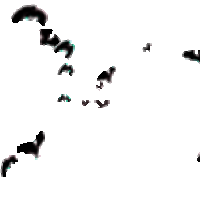
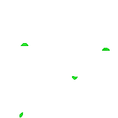
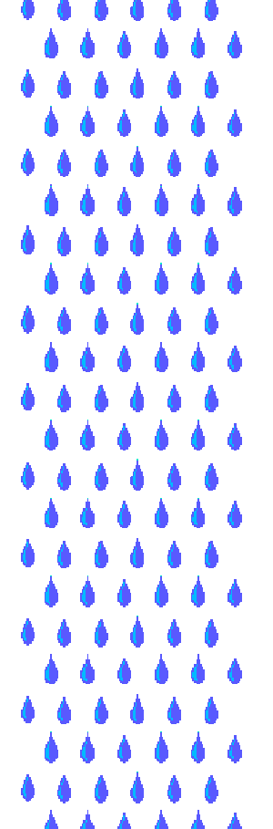
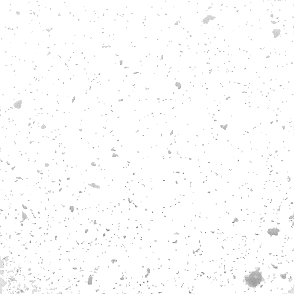 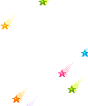
Disassociative Walks
i take walks around my neighborhood.
i wear headphones
and no contacts.
one night
after walking with a friend,
he asks me how i deal with all of the eyes and voices.
it was shocking
because somehow I had remained oblivious
watch me walk [bird's eye]:
Sept 3 2016 [walking 20 y.o.]
Sept 4 2016 [walking 20 y.o.]
Sept 5 2016 [walking 20 y.o.]
Sept 6 2016 [walking 20 y.o.]
Sept 7 2016 [walking 20 y.o.]
take my walk [pov]:
Sept 3 2016 [bright, peachy speedwalk]
Sept 4 2016 [fragile soft daze, wander]
Sept 5 2016 [glittery shining, wander]
Sept 6 2016 [heartache, speedwalk]
Sept 7 2016 [fresh pensive, light]
ost / recordings
on the subject of walking
nyc asmr
walking the entire city
Rebecca Solnit
Aristotle
disembodied systems
Self-Driving Car
Taipei 3D Drive
glitchy nyc satellite map
more on feeling 'dissociated'
code
View on GitHub
Download .zip
Download .tar.gz
 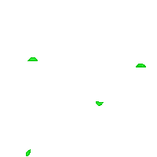
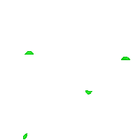


 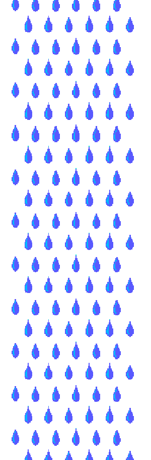
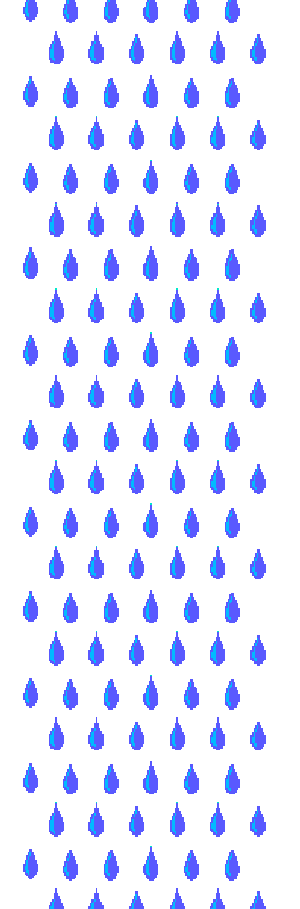
 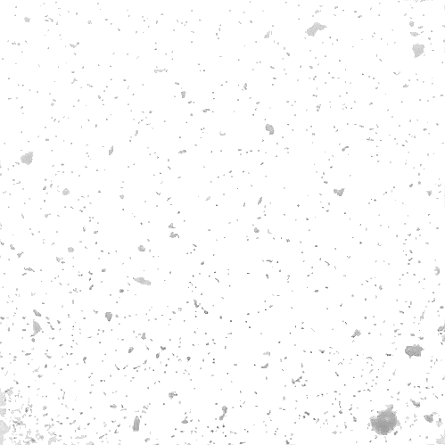
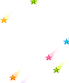
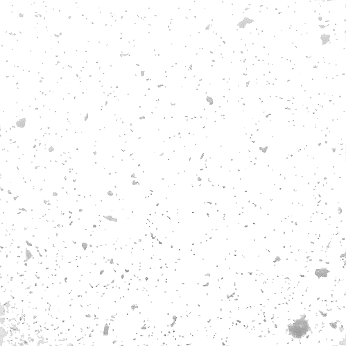
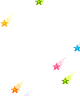
 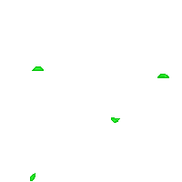
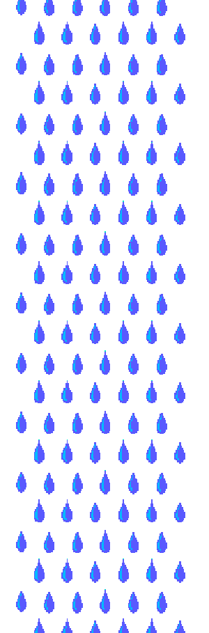
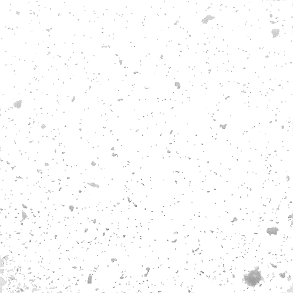
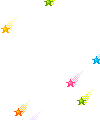
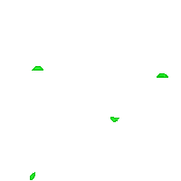
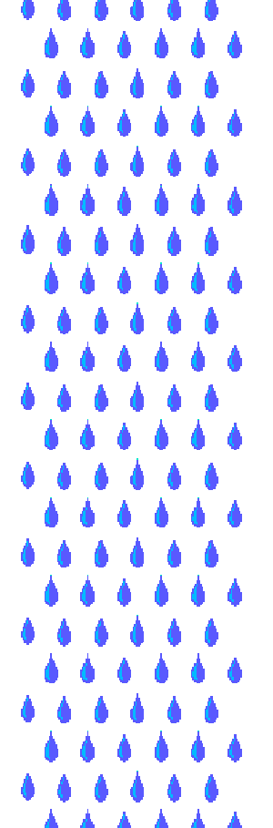
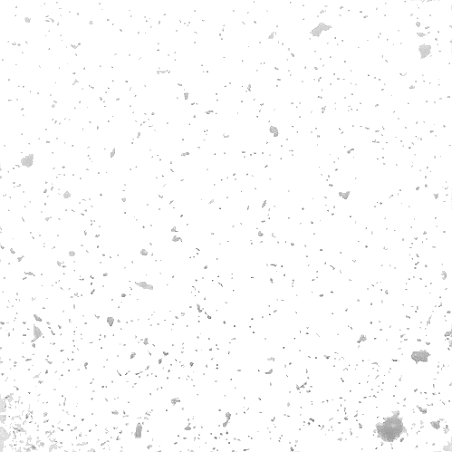
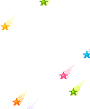